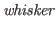
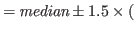
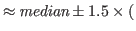
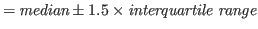

Next: RでGLMMの実行 Up: Rの利用に関する備忘録 Previous: Rの利用に関する備忘録
ラベルや軸を表示しない
x <- seq(-3,3,length=100) quartz(type="pdf", width=3, height=4, file="figscurve01.pdf") par(mfrow=c(2,1), mgp=c(2,0.8,0),mar=c(1,1,1,1)) plot(x, pnorm(x, lower=T), type="l", xaxt="n", yaxt="n", xlab="", ylab="", col="red", lwd=2) polygon(c(x,rev(x)),c(rep(1,100),rev(pnorm(x, lower=T))),col="#ff00ff40",border="#ff00ff40") plot(x, dnorm(x), type="l", axes=F); axis(1); axis(2) dev.off()
検定力分析の説明
quartz(type="pdf", width=4, height=3, file="figpower.pdf")
par(family="HiraKakuProN-W3",mgp=c(2,0.8,0),mar=c(3.2, 3.2, 1.0, 0.5))
plot(t, dt(x=t,df=N-2,ncp=0),axes=F,xlab="t",ylab="確率密度",main="",type="l",xlim=c(min(t),max(t)),col="red")
par(new=T)
plot(t, dt(x=t,df=N-2,ncp=delta),axes=F,xlab="",ylab="",main="",type="l",xlim=c(min(t),max(t)),col="blue")
polygon(c(t.lower,rev(t.lower)),c(rep(0,100),rev(dt.lower)),col="#ff00ff40",border="#ff00ff40")
polygon(c(t.upper,rev(t.upper)),c(rep(0,100),rev(dt.upper)),col="#ff00ff40",border="#ff00ff40")
polygon(c(t.upper,rev(t.upper)),c(rep(0,100),rev(dt.upper.ncp)),col="#0000ff40",border="#0000ff40")
segments(min(t),0,max(t),0,col="gray")
arrows(min(t),0,qt(p=0.025,df=N-2),0,angle=90,length=0,col="red2",lwd=5,lend="butt")
arrows(max(t),0,qt(p=0.975,df=N-2),0,angle=90,length=0,col="red2",lwd=5,lend="butt")
arrows(-2.5,0.01,-3.0,0.15, col="#ff00ff60", length=0.1, lwd=3)
arrows( 2.5,0.01,-2.8,0.15, col="#ff00ff60", length=0.1, lwd=3)
text(-2.8,0.18,expression(paste(alpha," (=.05)")))
arrows(-2.5,0.00, 4.0,0.25, col="#0000ff60", length=0.1, lwd=3)
arrows( 3.5,0.05, 4.2,0.25, col="#0000ff60", length=0.1, lwd=3)
text(4.5,0.28,expression(paste("1-",beta," (=.48)")))
axis(1,cex.axis=0.8)
axis(2,cex.axis=0.8)
legend("topleft",bty="n",legend=c(expression(paste(rho,"=.0")),expression(paste(rho,"=.3"))),lty=1,col=c("red","blue"))
dev.off()
共通の変数と個別の変数を含むデータフレーム data01, data02, data03 から、共通の変数部分を抜き出して縦につなげて1つのデータセット data04 を作りたいとする。
これらに共通の変数名が idnames, fsnames, bsnames, scnames に格納されているとすると、
data04 <- rbind(data01[,c(idnames,fsnames,bsnames,scnames)],
data02[,c(idnames,fsnames,bsnames,scnames)],
data03[,c(idnames,fsnames,bsnames,scnames)])
でよい。
merge() を使ったり、変数名の指定に data01[,which(colnames(data01) %in% c(idnames, fsnames))] などとしたくなるのだが、これだとうまくいかない。
データフレームのうち条件を満たす行を抜き出す。
data01 <- subset(data01, position=="1"|position=="2")とすればよい。 なお、
attach(data01) data01 <- data01[(position=="1")|(position=="2"),] detach(data01)としても同じことができる気がするのだが、うまくいかない（他の変数に謎の NA が発生する）。
箱ひげ図の描画。上から順に、上限の極値（ヒゲ）、上側四分位数、中央値、下側四分位数、下限の極値（ヒゲ）が描画される。 上下のヒゲは、それぞれ
|  | 3rd hinge 1st hinge | (1.1) |
| 3rd quartile 1st quartile | (1.2) | |
|  | (1.3) |
Taichi Okumura